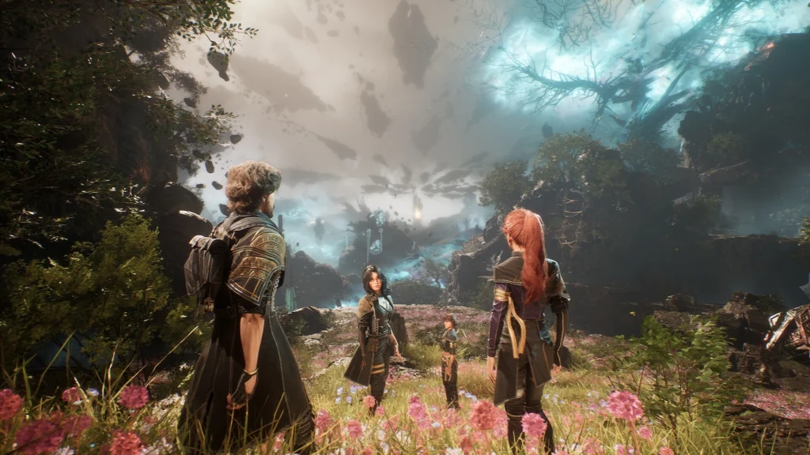

Characters

Expedition 33
Disaster expedition, ey?
With only one year left to live, join Gustave, Maelle, Lune, Sciele and their fellow Expeditioners as they embark upon a desperate quest to break the Paintress’ cycle of death.Later on Verso and Monoco joins to the group of lone survivors.TOP 10 OST songs
- Une vie à t'aimer
- Lumiére
- Une vie à peindre
- Alicia
- Paintress
- Siréne - Rouge d'Iris
- Clea
- Lampmaster
- Déchire la Toile
- Verso

Nevrons
As long as even one of us stands, our fight is not over.
Nevrons are dangerous, Chroma-consuming monsters created from grief and art, forming the primary threat the expeditions fight to destroy the "Paintress".
Gestrals
Is that a Gestral?
Gestrals are cute, dog-like paintbrush creatures, known for their love of fighting, simple-mindedness, and unique rebirth cycle where fallen warriors become new, younger Gestrals at the Sacred River.